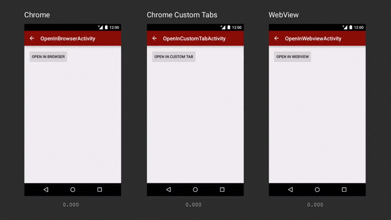

Chrome Custom Tabs
Last updated by Paul Kinlan: Friday May 6, 2016.
What are Chrome Custom Tabs?
App developers face a choice when a user taps a URL to either launch a browser, or build their own in-app browser using WebViews.
Both options present challenges — launching the browser is a heavy context switch that isn't customizable, while WebViews don't share state with the browser and add maintenance overhead.
Chrome Custom Tabs give apps more control over their web experience, and make transitions between native and web content more seamless without having to resort to a WebView.
Chrome Custom Tabs allow an app to customize how Chrome looks and feels. An app can change things like:
- Toolbar color
- Enter and exit animations
- Add custom actions to the Chrome toolbar, overflow menu and bottom toolbar
Chrome Custom Tabs also allow the developer to pre-start Chrome and pre-fetch content for faster loading.
You can test this now with our sample on Github.
When should I use Chrome Custom Tabs vs WebView?
The WebView is good solution if you are hosting your own content inside your app. If your app directs people to URLs outside your domain, we recommend that you use Chrome Custom Tabs for these reasons:
- Simple to implement. No need to build code to manage requests, permission grants or cookie stores.
- UI customization:
- Toolbar color
- Action button
- Custom menu items
- Custom in/out animations
- Bottom toolbar
- Navigation awareness: the browser delivers a callback to the application upon an external navigation.
- Security: the browser uses Google's Safe Browsing to protect the user and the device from dangerous sites.
- Performance optimization:
- Pre-warming of the Browser in the background, while avoiding stealing resources from the application.
- Providing a likely URL in advance to the browser, which may perform speculative work, speeding up page load time.
- Lifecycle management: the browser prevents the application from being evicted by the system while on top of it, by raising its importance to the "foreground" level.
When will this be available?
As of Chrome 45, Chrome Custom Tabs is now generally available to all users of Chrome, on all of Chrome's supported Android versions (Jellybean onwards).
We are looking for feedback, questions and suggestions on this project, so we encourage you to file issues on crbug.com and ask questions to our Twitter account @ChromiumDev.
Implementation guide
A complete example is available at https://github.com/GoogleChrome/custom-tabs-client. It contains re-usable classes to customize the UI, connect to the background service, and handle the lifecycle of both the application and the custom tab activity.
If you follow the guidance from this page, you will be able to create a great integration.
The first step for a Custom Tabs integration is adding the Custom Tabs Support Library to your project. Open your build.gradle file and add the support library to the dependency section.
dependencies {
...
compile 'com.android.support:customtabs:23.3.0'
}
Once the Support Library is added to your project there are two sets of possible customizations:
- Customizing the UI and interaction with the custom tabs.
- Making the page load faster, and keeping the application alive.
The UI Customizations are done by using the CustomTabsIntent and the CustomTabsIntent.Builder classes;
the performance improvements are achieved by using the CustomTabsClient to connect to the Custom Tabs service, warm-up Chrome and let it know which urls will be opened.
Opening a Chrome Custom Tab
// Use a CustomTabsIntent.Builder to configure CustomTabsIntent. // Once ready, call CustomTabsIntent.Builder.build() to create a CustomTabsIntent // and launch the desired Url with CustomTabsIntent.launchUrl() String url = https://paul.kinlan.me/; CustomTabsIntent.Builder builder = new CustomTabsIntent.Builder(); CustomTabsIntent customTabsIntent = builder.build(); customTabsIntent.launchUrl(this, Uri.parse(url));
Configure the color of the address bar
One of the most important (and simplest to implement) aspects of Chrome Custom Tabs is the ability for you to change the color of the address bar to be consistent with your app's theme.
// Changes the background color for the omnibox. colorInt is an int // that specifies a Color. builder.setToolbarColor(colorInt);
Configure a custom action button
As the developer of your app, you have full control over the Action Button that is presented to your users inside the Chrome tab.
In most cases, this will be a primary action such as Share, or another common activity that your users will perform.
The Action Button is represented as a Bundle with an icon of the action button and a pendingIntent that will be called by Chrome when your user hits the action button. The icon is currenlty 24dp in height and 24-48 dp in width.
// Adds an Action Button to the Toolbar. // 'icon' is a Bitmap to be used as the image source for the // action button. // 'description' is a String be used as an accessible description for the button. // 'pendingIntent is a PendingIntent to launch when the action button // or menu item was tapped. Chrome will be calling PendingIntent#send() on // taps after adding the url as data. The client app can call // Intent#getDataString() to get the url. // 'tint' is a boolean that defines if the Action Button should be tinted. builder.setActionButton(icon, description, pendingIntent, tint);
Configure a custom menu
The Chrome browser has a comprehensive menu of actions that users will perform frequently inside a browser, however they may not be relevant to your application context.
Chrome Custom Tabs will have a three icon row with "Forward", "Page Info" and "Refresh" on top at all times, with "Find page" and "Open in Browser" on the footer of the menu.
As the developer, you can add and customize up to five menu items that will appear between the icon row and foot items.
The menu item is added by calling CustomTabsIntent.Builder#addMenuItem with title and a pendingIntent that Chrome will call on your behalf when the user taps the item are passed as parameters.
builder.addMenuItem(menuItemTitle, menuItemPendingIntent);
Configure custom enter and exit animations
Many Android applications use custom View Entrance and Exit animations when transition between Activities on Android. Chrome Custom Tabs is no different, you can change the entrance and exit (when the user presses Back) animations to keep them consistent with the rest of your application.
builder.setStartAnimations(this, R.anim.slide_in_right, R.anim.slide_out_left); builder.setExitAnimations(this, R.anim.slide_in_left, R.anim.slide_out_right);
Warm up Chrome to make pages load faster
By default, when CustomTabsIntent#launchUrl is called, it will spin up Chrome and launch the URL. This can take up
precious time and impact on the perception of smoothness.
We believe that users demand a near instantaneous experience, so we have provided a Service in Chrome that your app can connect to and tell Chrome to warm up the browser and the native components. We are also experimenting with the ability for you, the developer to tell Chrome the likely set of web pages the user will visit. Chrome will then be able to perform:
- DNS pre-resolution of the main domain
- DNS pre-resolution of the most likely sub-resources
- Pre-connection to the destination including HTTPS/TLS negotiation.
The process for warming up Chrome is as follows:
- Use
CustomTabsClient#bindCustomTabsServiceto connect to the service. - Once the service is connected, call
CustomTabsClient#warmupto start Chrome behind the scenes. - Call
CustomTabsClient#newSessionto create a new session. This session is used for all requests to the API. - Optionally, attach a
CustomTabsCallbackas a parameter when creating a new session, so that you know a page was loaded. - Tell Chrome which pages the user is likely to load with
CustomTabsSession#mayLaunchUrl. - Call the
CustomTabsIntent.Builderconstructor passing the createdCustomTabsSessionas a parameter.
Connect to the Chrome Service
The CustomTabsClient#bindCustomTabsService method takes away the complexity of
connecting to the Custom Tabs service.
Create a class that extends CustomTabsServiceConnection and use onCustomTabsServiceConnected
to get an instance of the CustomTabsClient. This instance will be needed on the next steps.
// Package name for the Chrome channel the client wants to connect to. This
// depends on the channel name.
// Stable = com.android.chrome
// Beta = com.chrome.beta
// Dev = com.chrome.dev
public static final String CUSTOM_TAB_PACKAGE_NAME = "com.android.chrome"; // Change when in stable
CustomTabsServiceConnection connection = new CustomTabsServiceConnection() {
@Override
public void onCustomTabsServiceConnected(ComponentName name, CustomTabsClient client) {
mCustomTabsClient = client;
}
@Override
public void onServiceDisconnected(ComponentName name) {
}
};
boolean ok = CustomTabsClient.bindCustomTabsService(this, mPackageNameToBind, connection);
Warm up the Browser Process
boolean warmup(long flags)
Warms up the browser process and loads the native libraries. Warmup is asynchronous, the return value indicates whether the request has been accepted. Multiple successful calls will also return true.
Returns true for success.
Create a new tab session
boolean newSession(CustomTabsCallback callback)
Session is used in subsequent calls to link mayLaunchUrl call, the CustomTabsIntent and the tab generated to each other. The callback provided here is associated with the created session. Any updates for the created session (see Custom Tabs Callback below) is also received through this callback. Returns whether a session was created successfully. Multiple calls with the same CustomTabsCallback or a null value will return false.
Tell Chrome what URL's the user is likely to open
boolean mayLaunchUrl(Uri url, Bundle extras, List otherLikelyBundles)
This CustomTabsSession method tells the browser of a likely future navigation to a URL.
The method warmup() should be called first as a best practice. The most likely URL has to be
specified first. Optionally, a list of other likely URLs can be provided.
They are treated as less likely than the first one, and have to be sorted
in decreasing priority order. These additional URLs may be ignored. All
previous calls to this method will be deprioritized. Returns whether the
operation completed successfully.
Custom Tabs Connection Callback
void onNavigationEvent(int navigationEvent, Bundle extras)
Will be called when a navigation event happens in the custom tab. The `navigationEvent int` is one of 6 values that defines the state of the the page is in. See below for more information.
/** * Sent when the tab has started loading a page. */ public static final int NAVIGATION_STARTED = 1; /** * Sent when the tab has finished loading a page. */ public static final int NAVIGATION_FINISHED = 2; /** * Sent when the tab couldn't finish loading due to a failure. */ public static final int NAVIGATION_FAILED = 3; /** * Sent when loading was aborted by a user action before it finishes like clicking on a link * or refreshing the page. */ public static final int NAVIGATION_ABORTED = 4; /** * Sent when the tab becomes visible. */ public static final int TAB_SHOWN = 5; /** * Sent when the tab becomes hidden. */ public static final int TAB_HIDDEN = 6;
What happens if the user doesnt have a recent version of Chrome installed?
Custom Tabs uses an ACTION_VIEW Intent with key Extras to customize the UI. This means that by default the page willopen in the system browser, or the user's default browser.
If the user has Chrome installed and it is the default browser, it will automatically pick up the EXTRAS and present a customized UI. It is also possible for another browser to use the Intent extras to provide a similar customized interface.
How can I check whether Chrome supports Chrome Custom Tabs?
All versions of Chrome supporting Chrome Custom Tabs expose a service. To check whether Chrome supports custom tabs, try to bind to the service. If it succeeds, then custom tabs can safely be used.
Best Practices
Since Chrome Custom Tabs was launched, we've seen various implementations with different levels of quality. This section describes a set of best practices we've found to create a good integration.
Connect to the Custom Tabs service and call warmup()
You can save up to 700 ms when opening a link with the Custom Tabs by connecting to the service and pre-loading Chrome.
Connect to the Custom Tabs service on the onStart() method of the Activities you plan to launch a Custom Tab from. Upon connection, call warmup().
The loading happens as a low priority process, meaning that it wont have any negative performance impact on your application, but will give a big performance boost when loading a link.
Pre-render content
Pre-rendering will make external content open instantly. So, as if your user has at least a 50% likelihood of clicking on the link, call the mayLaunchUrl() method.
Calling mayLaunchUrl() will make Custom Tabs pre-fetch the main page with the supporting content and pre-render. This will give the maximum speed up to the page loading process, but comes with a network and battery cost.
Custom Tabs is smart and knows if the user is using the phone on a metered network or if its a low end device and pre-rendering will have a negative effect on the overall performance of the device and wont pre-fetch or pre-render on those scenarios. So, theres no need to optimize your application for those cases.
Provide a fallback for when Custom Tabs is not installed
Although Custom Tabs is available for the great majority of users, there are some scenarios where a browser that supports Custom Tabs is not installed on the device or the device does not support a browser version that has Custom Tabs enabled.
Make sure to provide a fallback that provides a good user experience by either opening the default browser or using your own WebView implementation.
Add your app as the referrer
It's usually very important for websites to track where their traffic is coming from. Make sure you let them know you are sending them users by setting the referrer when launching your Custom Tab
intent.putExtra(Intent.EXTRA_REFERRER,
Uri.parse(Intent.URI_ANDROID_APP_SCHEME + "//" + context.getPackageName()));
Add custom animations
Custom animations will make the transition from your application to the web content smoother. Make sure the finish animation is the reverse of the start animation, as it will help the user understand shes returning to the content where the navigation started.
//Setting custom enter/exit animations
CustomTabsIntent.Builder intentBuilder = new CustomTabsIntent.Builder();
intentBuilder.setStartAnimations(this, R.anim.slide_in_right, R.anim.slide_out_left);
intentBuilder.setExitAnimations(this, android.R.anim.slide_in_left,
android.R.anim.slide_out_right);
//Open the Custom Tab
intentBuilder.build().launchUrl(context, Uri.parse("https://developer.chrome.com/"));
Choosing an icon for the Action Button
Adding an Action Button will make users engage more with your app features. But, if there isnt a good icon to represent the action your Action Button will perform, create a bitmap with a text describing the action.
Remember the maximum size for the bitmap is 24dp height x 48dp width.
String shareLabel = getString(R.string.label_action_share);
Bitmap icon = BitmapFactory.decodeResource(getResources(),
android.R.drawable.ic_menu_share);
//Create a PendingIntent to your BroadCastReceiver implementation
Intent actionIntent = new Intent(
this.getApplicationContext(), ShareBroadcastReceiver.class);
PendingIntent pendingIntent =
PendingIntent.getBroadcast(getApplicationContext(), 0, actionIntent, 0);
//Set the pendingIntent as the action to be performed when the button is clicked.
intentBuilder.setActionButton(icon, shareLabel, pendingIntent);
Preparing for other browsers
Remember the user may have more than one browser installed that supports Custom Tabs. If there's more than one browser that supports Custom Tabs and none if them is the preferred browser, ask the user how she wants to open the link
/**
* Returns a list of packages that support Custom Tabs.
*/
public static ArrayList getCustomTabsPackages(Context context) {
PackageManager pm = context.getPackageManager();
// Get default VIEW intent handler.
Intent activityIntent = new Intent(Intent.ACTION_VIEW, Uri.parse("http://www.example.com"));
// Get all apps that can handle VIEW intents.
List resolvedActivityList = pm.queryIntentActivities(activityIntent, 0);
ArrayList packagesSupportingCustomTabs = new ArrayList<>();
for (ResolveInfo info : resolvedActivityList) {
Intent serviceIntent = new Intent();
serviceIntent.setAction(ACTION_CUSTOM_TABS_CONNECTION);
serviceIntent.setPackage(info.activityInfo.packageName);
// Check if this package also resolves the Custom Tabs service.
if (pm.resolveService(serviceIntent, 0) != null) {
packagesSupportingCustomTabs.add(info);
}
}
return packagesSupportingCustomTabs;
}
Allow the user to opt out of Custom Tabs
Add an option into the application for the user to open links in the default browser instead of using a Custom Tab. This is specially important if the application opened the link using the browser before adding support for Custom Tabs.
Let native applications handle the content
Some URLs can be handled by native applications. If the user has the Twitter app installed and clicks on a link to a tweet. She expects that the Twitter application will handle it.
Before opening an url from your application, check if a native alternative is available and use it.
Customize the toolbar color
Customize with your application's primary color if you want the user to feel that the content is a part of your application.
If you want to make it clear for the user that she has left your application, dont customize the color at all.
//Setting a custom toolbar color
CustomTabsIntent.Builder intentBuilder = new CustomTabsIntent.Builder();
intentBuilder.setToolbarColor(Color.BLUE);
Add a Share Action
Make sure you add the Share Action to the overflow menu, as users expect to be able to share the link to the content they are seeing in most use cases, and Custom Tabs doesnt add one by default.
//Sharing content from CustomTabs with on a BroadcastReceiver
public void onReceive(Context context, Intent intent) {
String url = intent.getDataString();
if (url != null) {
Intent shareIntent = new Intent(Intent.ACTION_SEND);
shareIntent.setType("text/plain");
shareIntent.putExtra(Intent.EXTRA_TEXT, url);
Intent chooserIntent = Intent.createChooser(shareIntent, "Share url");
chooserIntent.setFlags(Intent.FLAG_ACTIVITY_NEW_TASK);
context.startActivity(chooserIntent);
}
}
Customize the close button
Customize the close button to make the Custom Tab feel it is part of your application.
If you want the user to feel like Custom Tabs is a modal dialog, use the default X button. If you want the user to feel the Custom Tab is part of the application flow, use the back arrow.
//Setting a custom back button
CustomTabsIntent.Builder intentBuilder = new CustomTabsIntent.Builder();
intentBuilder.setCloseButtonIcon(BitmapFactory.decodeResource(
getResources(), R.drawable.ic_arrow_back));
Handle internal links
When intercepting clicks on links generated by android:autoLink or overriding clicks on links on WebViews, make sure that your application handles the internal links and let's Custom Tabs handle the external ones.
WebView webView = (WebView)findViewById(R.id.webview);
webView.setWebViewClient(new WebViewClient() {
@Override
public boolean shouldOverrideUrlLoading(WebView view, String url) {
return true;
}
@Override
public void onLoadResource(WebView view, String url) {
if (url.startsWith("http://www.example.com")) {
//Handle Internal Link...
} else {
//Open Link in a Custom Tab
Uri uri = Uri.parse(url);
CustomTabsIntent.Builder intentBuilder =
new CustomTabsIntent.Builder(mCustomTabActivityHelper.getSession());
//Open the Custom Tab
intentBuilder.build().launchUrl(context, url));
}
}
});
Handle multiple clicks
If you need to do any processing between the user clicking on a link and opening the Custom Tab, make sure it runs in under 100ms. Otherwise people will see the unresponsiveness and may try to click multiple times on the link.
If it's not possible to avoid the delay, make sure you application is prepared for when a user clicks multiple times on the same link and does not open a Custom Tab multiple times.
Low level API
Although the recommended method to integrate your application with Custom Tabs is using the Custom Tabs Support Library, a low level implementation is also available.
The complete implementation of the Support Library is available on Github and an be used as a start point. It also contains the AIDL files required to connect to the service, as the ones contained in the Chromium repository are not directly usable with Android Studio.
Basics for Launching Custom Tabs using the Low Level API
// Using a VIEW intent for compatibility with any other browsers on device. // Caller should not be setting FLAG_ACTIVITY_NEW_TASK or // FLAG_ACTIVITY_NEW_DOCUMENT. String url = https://paul.kinlan.me/; Intent intent = new Intent(Intent.ACTION_VIEW, Uri.parse(url)); // Must have. Extra used to match the session. Its value is an IBinder passed // whilst creating a news session. See newSession() below. Even if the service is not // used and there is no valid session id to be provided, this extra has to be present // with a null value to launch a custom tab. private static final String EXTRA_CUSTOM_TABS_SESSION = "android.support.customtabs.extra.SESSION"; Bundle extras = new Bundle; extras.putBinder(EXTRA_CUSTOM_TABS_SESSION, sessionICustomTabsCallback.asBinder() /* Set to null for no session */); intent.putExtras(extras);
Adding UI Customisations
UI Customizations are included by adding Extras to the ACTION_VIEW Intent. A full list of the extras keys used to customise the UI can be found on the CustomTabsIntent docs. An example on how to add a custom toolbar color follows:
// Extra that changes the background color for the omnibox. colorInt is an int // that specifies a Color. private static final String EXTRA_CUSTOM_TABS_TOOLBAR_COLOR = "android.support.customtabs.extra.TOOLBAR_COLOR"; intent.putExtra(EXTRA_CUSTOM_TABS_TOOLBAR_COLOR, colorInt);
Connecting to the Custom Tabs service
The Custom Tabs service can be used in the same way other Android Services are. The interface is created with AIDL and automatically creates a proxy service class for you.
Use the methods on the proxy service to warm-up, create sessions and pre-fetch
// Package name for the Chrome channel the client wants to connect to. This
// depends on the channel name.
// Stable = com.android.chrome
// Beta = com.chrome.beta
// Dev = com.chrome.dev
public static final String CUSTOM_TAB_PACKAGE_NAME = "com.chrome.dev"; // Change when in stable
// Action to add to the service intent. This action can be used as a way
// generically pick apps that handle custom tabs for both activity and service
// side implementations.
public static final String ACTION_CUSTOM_TABS_CONNECTION =
"android.support.customtabs.action.CustomTabsService";
Intent serviceIntent = new Intent(ACTION_CUSTOM_TABS_CONNECTION);
serviceIntent.setPackage(CUSTOM_TAB_PACKAGE_NAME);
context.bindService(serviceIntent, mServiceConnection,
Context.BIND_AUTO_CREATE | Context.BIND_WAIVE_PRIORITY);
Useful Links
FAQ
- When will this be available on stable channel?
- Chrome Custom Tabs are available as of Chrome 45.
- Where can I ask questions?
- Stackoverflow tag: chrome-custom-tabs